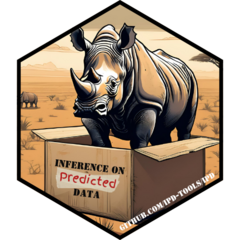
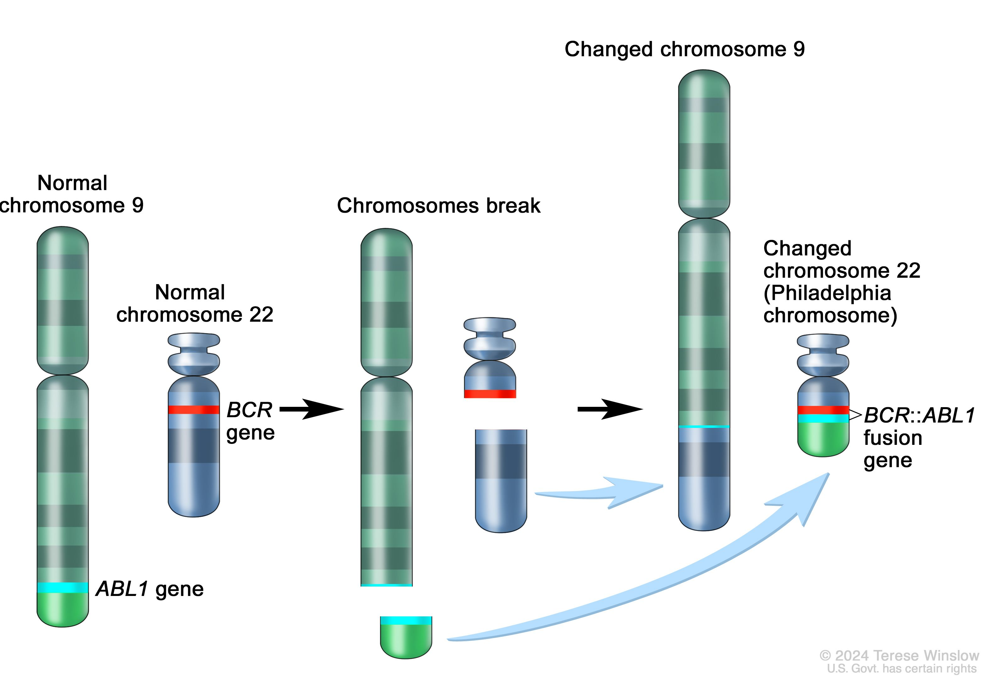
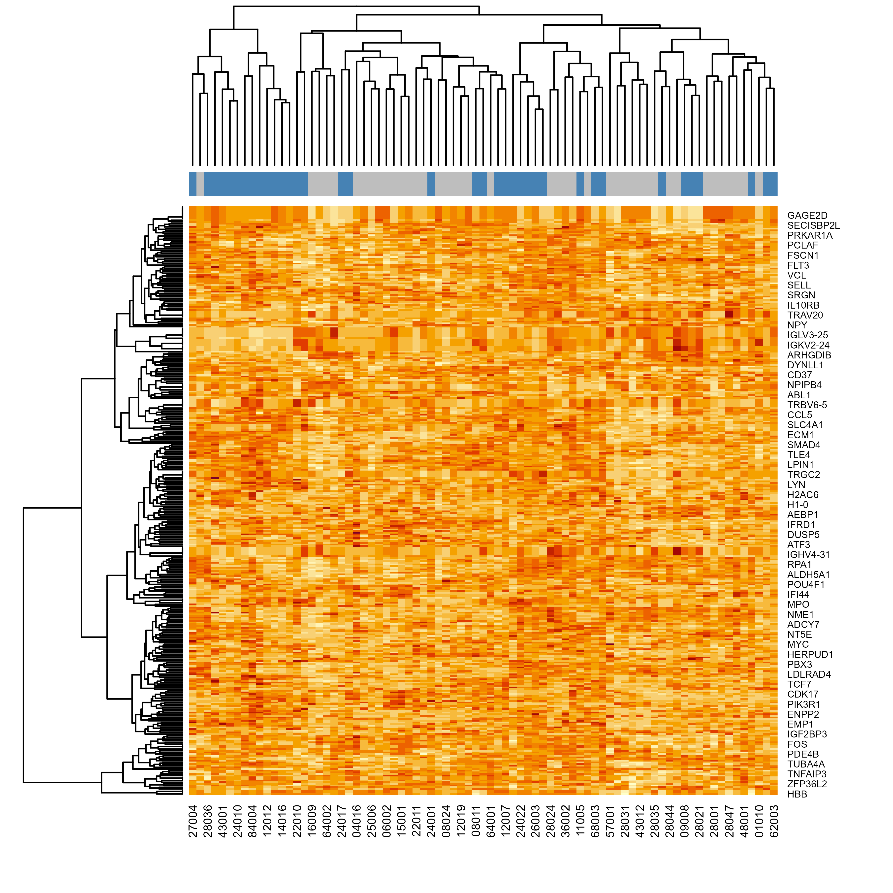
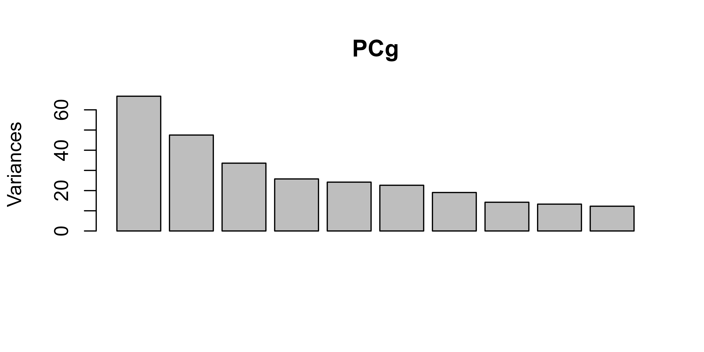
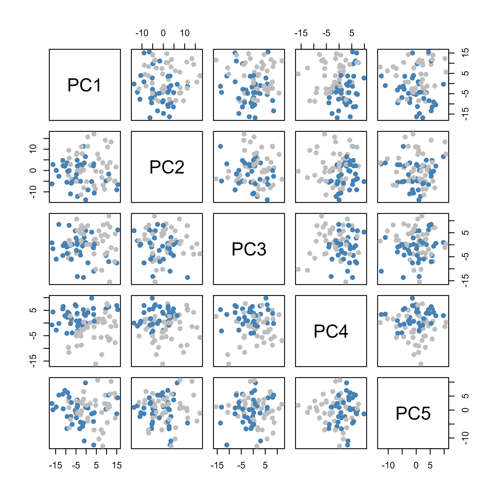
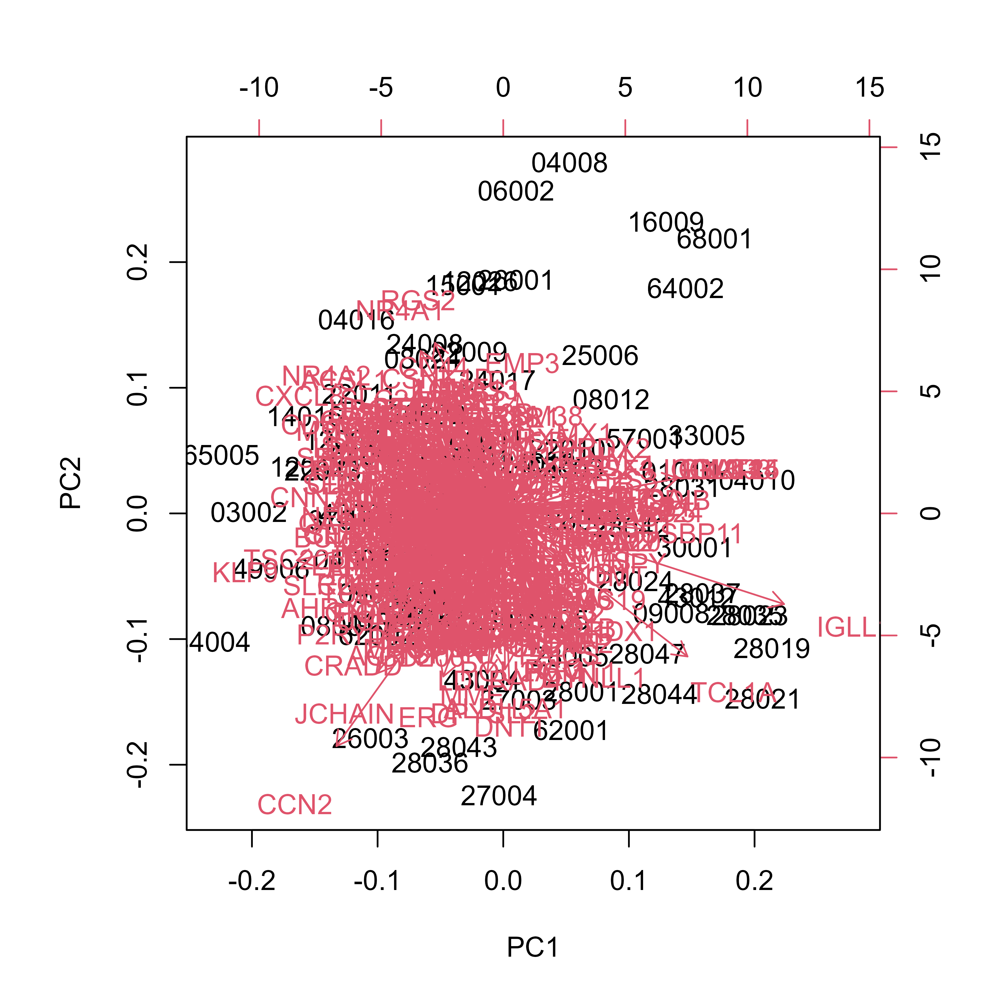
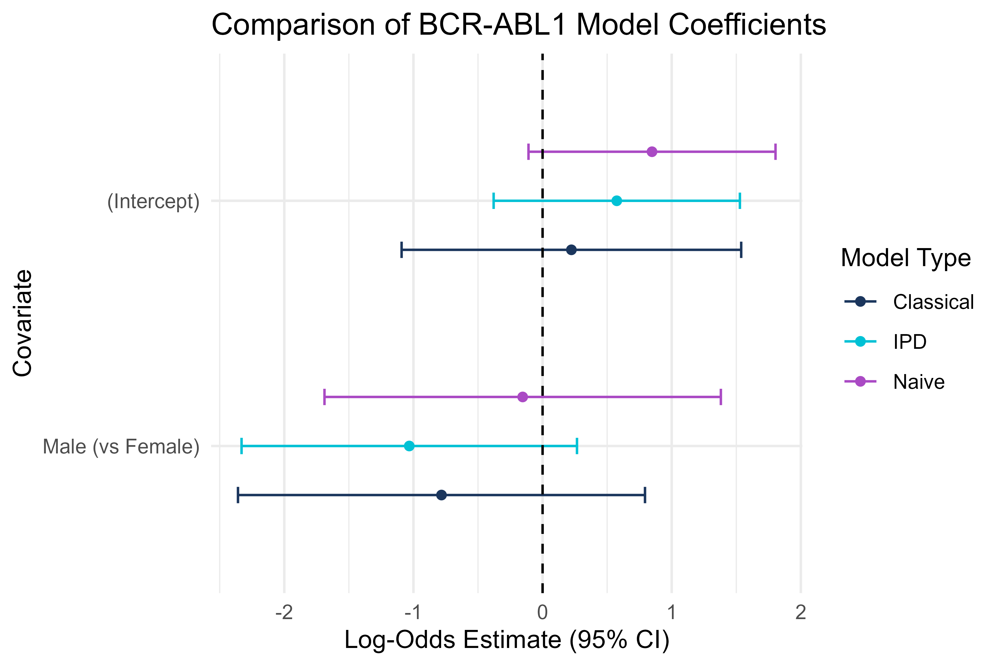

Unit 03: BCR-ABL Fusion in B-Cell Leukemia
Stephen Salerno
June 24, 2025
Source:vignettes/Unit03_GeneticData.Rmd
Unit03_GeneticData.RmdBackground & Motivation
Acute lymphoblastic leukemia (ALL) is the most common childhood cancer, but it exhibits marked genetic heterogeneity, with distinct chromosomal translocations defining molecular subtypes with divergent prognoses and therapeutic responses. In B-cell lineage ALL, the BCR-ABL1 fusion (“breakpoint cluster region”/“Abelson”, i.e., the “Philadelphia chromosome”) arises from a t(9;22) translocation and encodes a constitutively active tyrosine kinase. This fusion was historically associated with poor outcomes, until the advent of targeted therapies (e.g., imatinib) revolutionized treatment and survival.

High-density microarray profiling measures expression of over 7,000 genes in leukemic blast cells, enabling a form of “molecular diagnostics” where supervised learning can:
- Classify fusion status or other genetic subtypes when cytogenetic assays (PCR, FISH) are unavailable.
- Discover novel marker genes and pathways dysregulated by specific fusions.
- Predict therapeutic response and stratify risk using expression-derived scores.
However, in many retrospective or multi-center cohorts, only a subset of patients undergo gold-standard fusion testing (e.g., RT-PCR for BCR-ABL1), leaving the majority “unlabeled.” A common workaround is to train a gene expression classifier on the small labeled subset and apply it to the larger unlabeled cohort. Yet, naive downstream analyses, treating predicted labels as ground truth, can yield biased effect estimates and understate uncertainty.
Inference with Predicted Data (IPD) offers a principled remedy: it combines a small labeled set with the predicted labels (e.g., with true fusion status) with a larger unlabeled set, adjusting both bias and variance. In this module, we will:
-
Describe the
ALLandGolubBioconductor datasets. -
Subset the
ALLdata to B-cell ALL and filter to the top 500 variable probes. - Harmonize probes across platforms via gene symbols.
-
Split the
ALLdata and train three classifiers for BCR-ABL1 fusion status. -
Predict on the holdout
ALLandGolubB-cell ALL data using theALL-trained classifier. - Apply IPD to estimate the association between fusion status and patient sex assigned at birth.
By the end, you will understand how to leverage expression-based predictions while maintaining valid inference on genetic subtypes in cohorts with partially missing gold-standard labels.
Note: For the data loading and prediction workflows, we will directly follow the Bioconductor MLInterfaces vignette by VJ Carey and P Atieno:
https://www.bioconductor.org/packages/devel/bioc/vignettes/MLInterfaces/inst/doc/MLprac2_2.html
Datasets Overview
We work with two public Bioconductor datasets:
-
ALL
(
ALLpackage): 128 samples of acute lymphoblastic leukemia (both B- and T-cell), profiled on the Affymetrix HGU95Av2 microarray. Phenotype data includeBT(immunophenotype),mol.biol(molecular subtype including BCR-ABL1 or NEG), age, and sex. -
Golub_Merge
(
golubEsetspackage): 72 samples of leukemias (ALL vs. AML), profiled on Affymetrix HGU6800. Phenotype data includeALL.AML,T.B.cell(lineage), age, and sex.
We will train our classifiers on a subset of the ALL
data, test the model on the holdout ALL data, and perform
IPD on the holdout ALL and Golub data.
Phenotype Reduction and Feature Filtering
We first narrow to B-cell ALL samples and reduce dimensionality by keeping the 500 most variable probes.
# Load the ALL data
data(ALL)
# Subset ALL to B-cell lineage (BT codes starting with "B")
bALL <- ALL[, substr(pData(ALL)$BT, 1, 1) == "B"]
# Keep only fusion-negative ("NEG") and fusion-positive ("BCR/ABL") samples
fus <- bALL[, bALL$mol.biol %in% c("NEG", "BCR/ABL")]
# Convert to factor with clear levels: NEG=0, BCR/ABL=1
fus$mol.biol <- factor(fus$mol.biol, levels = c("NEG", "BCR/ABL"))
# Compute median absolute deviation (MAD) for each probe
devs <- apply(exprs(fus), 1, mad)
# Select top 500 most variable probes by MAD ranking
top500 <- order(devs, decreasing = TRUE)[1:500]
# Subset ExpressionSet to top 500 probes
dat_filt <- fus[top500, ]
# Confirm dimensions: 500 probes x n samples
dim(exprs(dat_filt))
#> [1] 500 79Explanation:
mad()is robust to outliers and captures variability.- Filtering saves time on downstream analysis without losing key signals.
- We now have
dat_filt, a filtered ALL dataset focused on B-cell lineage and the most informative probes.
Cross-Platform Probe Harmonization
To predict on the Golub data, which uses a different
array, we map probes from each platform to gene symbols, then intersect
to find a common gene set.
# Load the Golub data
data(Golub_Merge)
# Map HGU95Av2 probes (ALL) to gene symbols
gmap_all <- AnnotationDbi::select(
hgu95av2.db,
keys = featureNames(dat_filt),
columns = c("PROBEID","SYMBOL"),
keytype = "PROBEID"
)
# HGU6800 probes (Golub) to gene symbols
gmap_golub <- AnnotationDbi::select(
hu6800.db,
keys = featureNames(Golub_Merge),
columns = c("PROBEID","SYMBOL"),
keytype = "PROBEID"
)
# Identify common symbols
common_sym <- intersect(gmap_all$SYMBOL, gmap_golub$SYMBOL)
# For each symbol, pick the first associated probe
probe_all <- gmap_all |>
filter(SYMBOL %in% common_sym) |>
group_by(SYMBOL) |>
dplyr::slice(1) |>
drop_na()
probe_golub <- gmap_golub |>
filter(SYMBOL %in% common_sym) |>
group_by(SYMBOL) |>
dplyr::slice(1) |>
drop_na()
# Subset ExpressionSets to these probes
dat_train <- dat_filt[probe_all$PROBEID, ]
eset_golub <- Golub_Merge[probe_golub$PROBEID, ]
# Further subset Golub to B-cell ALL samples
golub_bALL <- eset_golub[, pData(eset_golub)$T.B.cell == "B-cell" &
pData(eset_golub)$ALL.AML == "ALL"]
featureNames(dat_train) <- probe_all$SYMBOL
rownames(exprs(dat_train)) <- probe_all$SYMBOL
featureNames(golub_bALL) <- probe_golub$SYMBOL
rownames(exprs(golub_bALL)) <- probe_golub$SYMBOL
# Confirm feature dimensions
dim(dat_train) # features x ALL samples
#> Features Samples
#> 354 79
dim(golub_bALL) # features x Golub B-cell ALL samples
#> Features Samples
#> 354 38
dat_trainandgolub_BALLnow share the same gene-symbol feature set, ready for model training and transfer.
Exploratory Data Analysis
With our filtered training set (dat_train), we explore
patterns using a heatmap and principal component analysis (PCA).
# Set subtype colors for visualization
fcol <- ifelse(dat_train$mol.biol == "NEG", "gray", "steelblue")
heatmap(exprs(dat_train), ColSideColors = fcol)

# Scatterplots of PCs
pairs(PCg$x[, 1:5], col = fcol, pch = 19)
# Biplot of PC1 vs PC2
biplot(PCg) 
Interpretation:
- The heatmap reveals distinct blocks of probes whose expression differs between BCR-ABL1 fusion-positive and fusion-negative samples.
- The PCA scatter shows separation (or overlap) of samples by fusion status along the first two principal components, and to a lesser extent, the next three.
- In the biplot, probes lying far from the origin along PC1 or PC2 represent genes with the largest loadings, i.e., the greatest contribution to those principal components. Samples positioned similarly share expression patterns in those genes.
- Overall, the modest separation in PCA indicates the need for supervised methods to pinpoint the genes most predictive of BCR-ABL1 status.
Train/Test Split and Classifier Training
We split dat_train (ALL) into 60% training and 40%
holdout, then train three ML models.
set.seed(2025) # for reproducibility
n_all <- ncol(dat_train) # number of ALL samples
train_idx <- sample(n_all, size = floor(0.6 * n_all))
# Training and holdout ExpressionSets
train_eset <- dat_train[, train_idx]
test_eset <- dat_train[, -train_idx]In this section, we compare three supervised learning methods using
the MLInterfaces
framework:
- Diagonal Linear Discriminant Analysis (dldaI)
- Neural Network (nnetI)
- Random Forest (randomForestI)
We will use the MLearn() function, which wraps each
algorithm, providing a consistent interface to train, predict, and
evaluate models on an ExpressionSet. After fitting, we will
use confuMat() to display the confusion matrix, showing the
true versus predicted class counts.
We train each model on the first 40 most variable probes from the
filtered ExpressionSet (features 1:40 in
train_eset).
Diagonal Linear Discriminant Analysis (dldaI)
Diagonal LDA assumes each feature is conditionally independent
(covariance matrix is diagonal), which can improve stability in
high-dimensional, low-sample settings. We use the dldaI
interface to fit and evaluate this classifier.
# Train Diagonal LDA on probes 1:40
dlda_mod <- MLearn(
mol.biol ~ ., # mol.biol ~ . specifies BCR/ABL1 fusion status as the outcome
train_eset, # Filtered ExpressionSet
dldaI, # dldaI is the diagonal LDA interface
1:40 # 1:40 selects the first 40 probes
)
#> [1] "mol.biol"
# Print a summary of the fitted model
dlda_mod
#> MLInterfaces classification output container
#> The call was:
#> MLearn(formula = mol.biol ~ ., data = train_eset, .method = dldaI,
#> trainInd = 1:40)
#> Predicted outcome distribution for test set:
#>
#> BCR/ABL NEG
#> 3 4
# Display the confusion matrix (true vs predicted)
cm_dlda <- confuMat(dlda_mod)
cm_dlda
#> predicted
#> given BCR/ABL NEG
#> BCR/ABL 3 1
#> NEG 0 3
# Accuracy of Diagonal LDA
acc_dlda <- sum(diag(cm_dlda)) / sum(cm_dlda)
cat("Accuracy:", sprintf("%.2f%%", acc_dlda * 100))
#> Accuracy: 85.71%Neural Network (nnetI)
A single hidden layer neural network can capture non-linear
relationships. We use the nnetI interface with default
parameters plus:
size = 5: number of hidden neuronsdecay = 0.01: weight-decay regularizationMaxNWts = 2000: maximum allowed number of weights
# Neural Network (nnetI)
nn_mod <- MLearn(
mol.biol ~ .,
train_eset,
nnetI,
1:40,
size=5,
decay=0.01,
MaxNWts=2000
)
#> [1] "mol.biol"
#> # weights: 1781
#> initial value 31.210991
#> iter 10 value 19.645950
#> iter 20 value 12.779243
#> iter 30 value 5.459003
#> iter 40 value 1.841191
#> iter 50 value 1.334631
#> iter 60 value 1.133200
#> iter 70 value 0.875814
#> iter 80 value 0.704137
#> iter 90 value 0.625722
#> iter 100 value 0.610470
#> final value 0.610470
#> stopped after 100 iterations
# Show model summary
nn_mod
#> MLInterfaces classification output container
#> The call was:
#> MLearn(formula = mol.biol ~ ., data = train_eset, .method = nnetI,
#> trainInd = 1:40, size = 5, decay = 0.01, MaxNWts = 2000)
#> Predicted outcome distribution for test set:
#>
#> BCR/ABL NEG
#> 5 2
#> Summary of scores on test set (use testScores() method for details):
#> [1] 0.2948988
# Confusion matrix for Neural Net
cm_nn <- confuMat(nn_mod)
cm_nn
#> predicted
#> given BCR/ABL NEG
#> BCR/ABL 4 0
#> NEG 1 2
# Accuracy of Neural Net
acc_nn <- sum(diag(cm_nn)) / sum(cm_nn)
cat("Accuracy:", sprintf("%.2f%%", acc_nn * 100))
#> Accuracy: 85.71%Random Forest (randomForestI)
Random forests build an ensemble of decision trees on bootstrapped
samples and random feature subsets, offering robust performance with
little tuning. We use the randomForestI to fit a random
forest model:
# Random Forest (randomForestI)
rf_mod <- MLearn(
mol.biol ~ .,
train_eset,
randomForestI,
1:40
)
#> [1] "mol.biol"
# Show model summary
rf_mod
#> MLInterfaces classification output container
#> The call was:
#> MLearn(formula = mol.biol ~ ., data = train_eset, .method = randomForestI,
#> trainInd = 1:40)
#> Predicted outcome distribution for test set:
#>
#> BCR/ABL NEG
#> 4 3
#> Summary of scores on test set (use testScores() method for details):
#> BCR/ABL NEG
#> 0.524 0.476
# Confusion matrix
cm_rf <- confuMat(rf_mod)
cm_rf
#> predicted
#> given BCR/ABL NEG
#> BCR/ABL 4 0
#> NEG 0 3
# Accuracy of Random Forest
acc_rf <- sum(diag(cm_rf)) / sum(cm_rf)
cat("Accuracy:", sprintf("%.2f%%", acc_rf * 100))
#> Accuracy: 100.00%Interpretation: Only the Random Forest achieves perfect separation in the validation samples. This highlights the challenge of discriminating BCR-ABL1 status based solely on the top variable probes and underscores why downstream IPD corrections (for regression inference) remain valuable.
Predictions on ALL Test and Golub
After fitting our classifiers on the training subset of ALL, we now generate predictions on both the ALL holdout test and the Golub B-cell ALL datasets.
# Predict BCR-ABL1 status on ALL test holdout using random forest
all_pred <- MLInterfaces::predict.classifierOutput(rf_mod, test_eset)
# Compare to true labels in test_eset
conf_mat_test <- table(
Truth = test_eset$mol.biol,
Predicted= all_pred$testPredictions
)
conf_mat_test
#> Predicted
#> Truth BCR/ABL NEG
#> NEG 3 16
#> BCR/ABL 11 2
# Predict BCR-ABL1 status on Golub B-cell ALL
golub_pred <- MLInterfaces::predict.classifierOutput(rf_mod, golub_bALL)
# Summarize prediction counts (no ground truth in Golub)
table(golub_pred$testPredictions)
#>
#> BCR/ABL NEG
#> 25 13Note: We retain true labels in the ALL test set for later IPD; Golub remains unlabeled.
IPD Inference on Sex Effect
We will now use Inference with Predicted Data (IPD) to estimate the log-odds effect of sex (male vs female) on true BCR-ABL1 status, combining the holdout ALL data with true and predict fusion status (i.e., our labeled data) and the Golub data with the predicted fusion status (i.e., our unlabeled data)
# Build labeled (ALL test) data frame
df_test <- tibble(
sample = colnames(test_eset),
set = "labeled",
true = as.integer(test_eset$mol.biol == "BCR/ABL"),
pred = as.integer(all_pred$testPredictions == "BCR/ABL"),
sex = factor(pData(test_eset)$sex, levels = c("F","M"))
)
# Build unlabeled (Golub) data frame
df_golub <- tibble(
sample = colnames(golub_bALL),
set = "unlabeled",
true = NA_real_,
pred = as.integer(golub_pred$testPredictions == "BCR/ABL"),
sex = factor(pData(golub_bALL)$Gender, levels = c("F","M"))
)
# Combine for IPD
ipd_df <- bind_rows(df_test, df_golub) |> drop_na(sex)
# Classical regression
class_fit <- glm(true ~ sex, "binomial", df_test)
class_df <- broom::tidy(class_fit) |>
mutate(method = "Classical")
# Naive regression
naive_fit <- glm(pred ~ sex, "binomial", df_golub)
naive_df <- broom::tidy(naive_fit) |>
mutate(method = "Naive")
# IPD logistic regression
ipd_fit <- ipd(
formula = true - pred ~ sex,
method = "pspa",
model = "logistic",
data = ipd_df,
label = "set",
)
ipd_df <- tidy(ipd_fit) |>
mutate(method = "IPD")
# Summarize coefficients
combined <- bind_rows(class_df, naive_df, ipd_df) |>
mutate(term = recode(term, "sexM" = "Male (vs Female)"))
# Forest plot
ggplot(combined, aes(x = estimate, y = term, color = method)) +
geom_point(position = position_dodge(width = 0.6)) +
geom_errorbarh(aes(xmin = estimate - 1.96 * std.error,
xmax = estimate + 1.96 * std.error),
height = 0.2,
position = position_dodge(width = 0.6)) +
geom_vline(xintercept = 0, linetype = "dashed") +
scale_y_discrete(limits = rev) +
scale_fill_manual(values = c("#1B365D", "#00C1D5", "#AA4AC4")) +
scale_color_manual(values = c("#1B365D", "#00C1D5", "#AA4AC4")) +
labs(
x = "Log-Odds Estimate (95% CI)",
y = "Covariate",
title = "Comparison of BCR-ABL1 Model Coefficients",
color = "Model Type"
) +
theme_minimal()
Insight: By treating the ALL test set as labeled and Golub as unlabeled, IPD combines information across cohorts to correct bias and improve precision when estimating the association between BCR-ABL1 status and patient sex.
This is the end of the module. We hope this was informative! For question/concerns/suggestions, please reach out to ssalerno@fredhutch.org